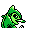

#156
Fraxure
Dragon
Its tusks can cut steel beams, but do not grow back It polishes them after every clash
Base stats Total 360
HP66
Attack117
Defense70
Speed67
Special40
Details
- Species
- Axe Jaw
- Height
- 3'03"
- Weight
- 79.4 lb
- Catch rate
- 60
- Base exp
- 144
- Growth
- Slow
Level-up moves
LevelMoveType
StartScratchNormal
StartLeerNormal
StartDragon RageDragon
Lv 7LeerNormal
Lv 10ScratchNormal
Lv 16Dragon RageDragon
Lv 20SlashNormal
Lv 25Swords DanceNormal
Lv 30CrunchDark
Lv 32Dragon ClawDragon
Lv 45OutrageDragon
TM / HM
TM03 Swords DanceTM04 CrunchTM06 ToxicTM09 Take DownTM10 Double-EdgeTM23 Dragon RageTM28 DigTM32 Double TeamTM39 SwiftTM44 RestTM50 SubstituteHM01 CutHM03 SurfHM04 Strength